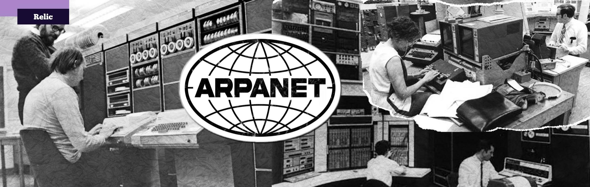
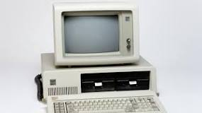

När startade utvecklingen av Internet? Vad startade utvecklingen?
-
Den startade 1960 och anledningen va att skapa kommuniation med landets militär ifall om delar av landet bombades. Utan en central dator kunde internet leva även efter delar av landet bombades och resten av landet kunde regera.
Källan
Vad var Internet tänkt för i början?
- Den var bygd med tanken för militär med målet att ifall delar av landet bombades kunde resten veta om det. Utan central datorn oavsätt vilken del av landet bombades skulle internet överleva. Men sen blev den omgjord till kommunikation för folk.
Källan
Vad är ARPA?
- ARPA är en domän för olika sidor på internet. Den också byttes med tiden från att betyda " Advanced Research Projects Agency" till "Address and Routing Parameter Area"
Källan
Vad heter nätet som var grunden till Internet?
-
ARPANET
Källan

Varför kunde ingen dator vara centraldator?
- Eftersom om centraldatorn gick ner då skulle hella netvärk/internet gå ner.
Källan: Markus Presentation
Vad är fördelen med distribuerat nätverk i stället för centraliserat?
- Oavsätt vilken dator försvinner, netvärk kommer finnas.
Källan
Vad står www för?
- World Wide Web
Vad är IP-nummer och hur fungerar de?
- Med IP kan internet identifera och hitta din dator.
Källan
Vad är syftet med TCP?
- Det är en protokoll för att sckika internet packeter genom att kolla efter om varje packet kom fram. TCP står för Transmit Control Protocol
När blev Internet populärt för vanliga mäniskor?
- Från 1993 till 1995 ökade det mäst i populäritet
Källan
Med vilket protokoll kommunicera man över internet?
-
TCP är vanligast men UDP är snabbare med mindre säkerhet att packet kommer fram.
Vilket språk var föregångaren till HTML?
- SGML (standard generalized markup language)
Källan
Vad var Gopher?
- Textbaserat menysystem och nätverksprotokoll för sökning av dokument på internet
Källan
Vilka var de första webbläsarna?
- Berners-Lee skapade den första webbläsaren och webbredigeraren, WorldWideWeb
Källan
När började vanliga personer att använda datorer?
- Början av 1980-talet
Källan

Vad används internet till idag?
- Vara social, söka information och underhållning.
Vad är en URL?
- Länken till sidan, istället att komma ihåg ip till servern så kommer man ihåg url som kopplas till ip. T. ex youtube.com istället för 1.23.5.5.2
När kom HTML resp. CSS ?
- HTML börjades använda i 1991 och CSS i 1996
Källa 1
Källa 2
Vad är syftet med CSS?
- Still till HTML. Det är mer organiserad att ha HTML för struktur och CSS seperat för still
Vad är XML. Och vad är skillnaden mellan XML och HTML.
-
XML används för att strukturera och organisera information/data medans HTML är för åskådliggöra och visa data.
Källa
Vem ser till att internet börjar fungera om det "går sönder"?
- Det finns ingen person eller organisation som tar hand om internet. Varje server och netvärk tars han om de personer som jobbar där.
Källan
Vem uppfann Java? Vad hade JAVA för betydelse för Internet?
- James Gosling uppfann JAVA och den används för flera olika programmer och appar t. ex. Minecraft eller websidor som gmail.
Källa 1
Källa 2

Vad var en Applet (i Java sammanhang)?
- Det är små appar programmerade med JAVA
Källa
Vad är ett serverspråk? Vilka finns?
- Programmerings språk som är oftast använda eller gjorda bara för server programmering. Några av de mäst populära är C#, Rust, Java och Ruby. Python också används men den är mycket långsammare.
Källan
Vem skapade php?
- Rasmus Lerdorf
Källan
Vad betyder ASP resp. JSP ?
-
ASP står för ”Application Service Provider” och betyder programvaruuthyrning. Java Servlets och JavaServer Pages (JSP) är de Java-specifikationer som finns för att exekvera program i en HTTP-server
Källa 1
Källa 2
Vad är Javascript? Vad är skillnaden på Javascript och serverspråken?
-
Javascript är vad som ger funktionalitet till hemsidan. HTML är struktur, CSS är still och javascript är det som får sidan vara mer än bara textdokument. Till skillnad från serverspråken javascript görns på "client-side" medans andra språk görs i servern.
Källa
Vem skapade facebook? När skedde det?
-
Mark Zuckerberg i 2004
Källa
Vilka skapade Skype? När kom Skype?
- Niklas Zennström och Janus Friis och skappades 2003
Källa
När kom Spotify?
-
2006
Källa
Frågor till lagar inom webbutveckling
Vad innebär copyleft?
-
Copyleft innebär att den som har upphovsrätten till ett datorprogram offentligt meddelar att alla som vill får använda programmet fritt: ladda ner det, köra det, kopiera det, ändra det och sprida det vidare, även mot betalning
Källa
Vilka copyleft-licenser finns det?
-
GNU General Public License(GPL, stark copyleft), GNU Lesser General Public License (svag copyleft), Mozilla Public License och Q Public License
Källa
Vad har Copyleft för bild som symbol.
Vad är Creative commons http://sv.wikipedia.org/wiki/Creative_Commons förklara
symboler?
Erkännande
Dela lika
Icke-kommersiell
 Inga bearbetningar
Inga bearbetningar
Vad innebär GDPR?
- Dataskyddsförordningen, GDPR, stärker dina rättigheter som privatperson
Källa